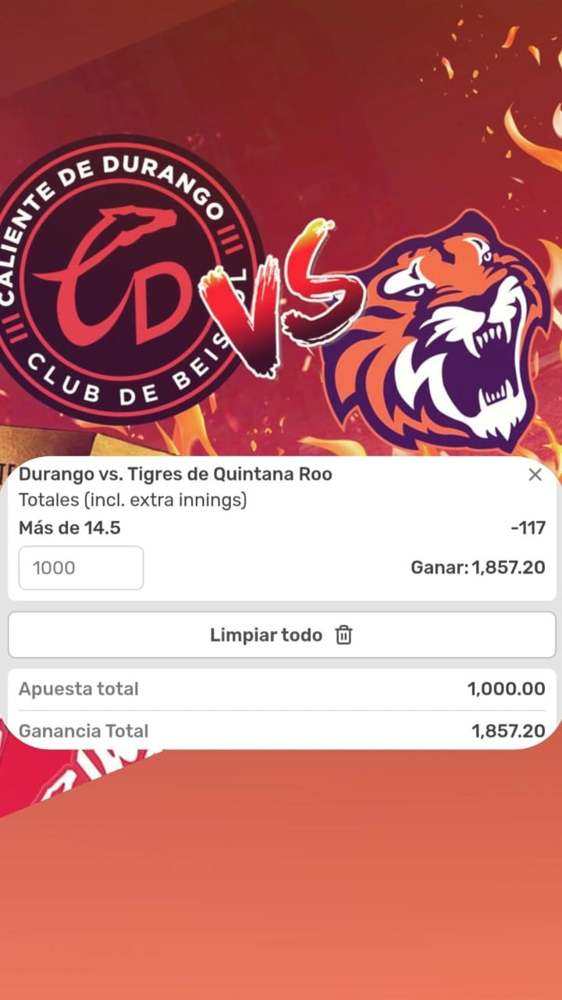

Aquí tienes los pronósticos de hoy:
⚾ 1. Ataques potentes y constantes.
Durango es el equipo más productivo del circuito, con un promedio de 580 carreras esta temporada, destacándose como la ofensiva más demoledora.
Tigres, aunque débiles en general, han encendido su bateado: en un reciente partido vencieron a Veracruz 15‑11, conectando 4 HR y acumulando 19 hits. Esto demuestra su capacidad para anotar mucho cuando conectan.
🧢 2. Pitcheo frágil por los dos lados.
Los pitcheos de Durango registran una ERA colectiva elevada: 7.92 carreras limpias es difícil contener ofensivas potentes.
Tigres no se quedan atrás: permiten promedio de 6.05 ERA y han sido superados por la media del circuito.
🧮 3. Diferenciales recientes de anotaciones.
Ambos equipos han estado involucrados en juegos muy ofensivos: Durango permitió 384 carreras y anotó 334 en casa; Tigres permitieron 294 y anotaron 245 en gira, con diferencia de –49. Esto indica enfrentamientos con amplios marcadores.